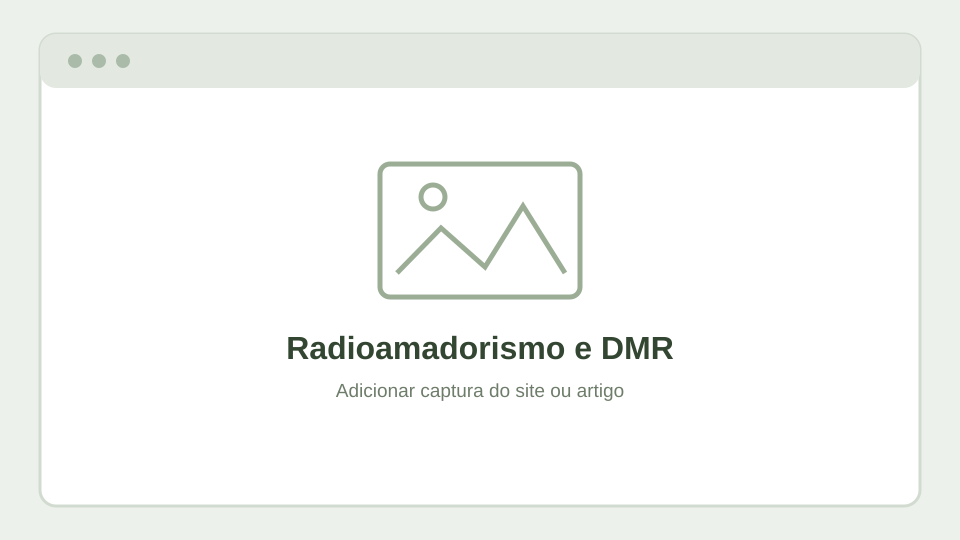

Comunicações e suporte
O radioamadorismo combina tecnologia, experimentação e partilha de conhecimento. Esta área reunirá artigos sobre sistemas de comunicação, utilização de modos digitais e experiências relacionadas com DMR.
Participação na equipa DMR Portugal, com apoio técnico a utilizadores de comunicações digitais DMR.
Artigos e capturas

Temas possíveis
Conteúdos a integrar
- Breve explicação do DMR e respetivo funcionamento.
- Guias introdutórios para configuração de equipamentos.
- Experiências de suporte e resolução de dúvidas frequentes.
- Artigos originais e ligações para o site de radioamadorismo.
Os artigos e as capturas serão adicionados com a respetiva autoria e ligação de origem. Não foram importados textos nem imagens dos sites nesta versão.